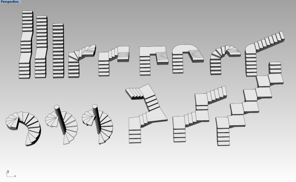

Estilos de escalera
vaEscaleraEstilos
Icono:
Escalera > Propiedades de estilo
Acceso directo:
El estilo de escalera define algunas características de los escaleras. Para cada estilo de escalera se pueden definir los siguientes parámetros: Nombre, Atributos,
Tipo, Pasos y Reglas.
Los estilos de escalera están definidos por el componente Losa, que se puede agregar o eliminar en cualquier momento.
Para crear un estilo de escalera, pulse el botón Nuevo estilo del cuadro de diálogo Administrador de estilos. Utilice el asistente que aparezca para introducir los parámetros de la escalera que se explican a continuación.
Edición general de estilos
Puede utilizar el comando
vaEscaleraEstilos o, alternativamente,
- Utilice el comando vaEstiloPropiedades, seleccione una escalera y pulse Intro, o bien
- Haga clic con el botón derecho en
 , seleccione una escalera y pulse Intro, o bien
, seleccione una escalera y pulse Intro, o bien
- Seleccione una escalera, abra el menú contextual pulsando el botón derecho del ratón durante un momento y seleccione Escalera > Propiedades de estilo, o bien
- Pulse Alt, Mayús o Ctrl y haga doble clic en un objeto de escalera.
Los cambios aplicados a un estilo se aplican a
todos los elementos con ese estilo.
Edición específica por objeto
- Utilice el comando vaPropiedades, seleccione una escalera y pulse Intro, o bien
- Haga clic en , seleccione una escalera y pulse Intro, o bien
- Seleccione una escalera, abra el menú contextual pulsando el botón derecho del ratón durante un momento y seleccione Escalera > Propiedades, o bien,
- Haga doble clic en un objeto de escalera.
Los cambios se aplican solo en el estilo del
elemento seleccionado.
Atributos
Los atributos definen las características de cada estilo de escalera y sus componentes para las vistas y la impresión. Los atributos válidos son:
- General: Capa, visibilidad y material
- Proyección: Color, Tipo de línea , Ancho de impresión de línea y Color de impresión de línea
- Sección: Color, Tipo de línea, Ancho de impresión de línea, Color de impresión de línea, Patrón, Escala de patrón, Ángulo de patrón y Color de patrón
Tipo
El parámetro Tipo define el tipo de escalera, que puede ser:
- Predeterminada: Se coloca un descansillo en la zona de inflexión de la escalera.
- Compensada: El valor de huella se aplica al centro de todos los peldaños.
Peldaños
Los componentes de un peldaño son:
- Losa de huella: Se visualiza en 3D, alzados y secciones, pero no afecta a la
representación en planta.
Las propiedades de la losa de huella son Grosor y Nariceo.
- Losa de contrahuella: Se visualiza en 3D, alzados y secciones, pero no afecta a la representación en
Planta
. La propiedad de losa de contrahuella es Grosor.
Reglas:
Active esta opción cuando desee definir la inclinación de la escalera teniendo en cuenta la regla siguiente: 2 contrahuellas + 1 huella = "número x".
El "número x" predeterminado oscila entre 0,54 m y 0,70 m y representa el intervalo de tamaños de un paso humano estándar.
Componentes de escalera
Losa
Las escaleras pueden tener una losa. Las losas de escalera se pueden crear o eliminar haciendo clic con el botón derecho en el nombre de estilo de escalera (Nueva > Losa de escalera o Eliminar existente). El grosor de losa puede editarse en la ficha de geometría cuando se selecciona el componente de losa.
La losa de escalera puede extenderse hasta la losa inicial y la losa del descansillo modificando su grosor desde la sección Propiedades de VisualARQ (panel Propiedades de Rhino  ):
):
- Grosor de losa superior: Grosor de losa de escalera necesario para la extensión del grosor de escalera donde finaliza la escalera.
- Grosor de losa inferior: Grosor de losa de escalera necesario para la extensión del grosor de escalera donde empieza la escalera.

Ejemplos de escaleras rectas y de caracol.
NOTA: Las propiedades de escalera no pertenecen al estilo de escalera, ni pueden definirse tampoco desde el cuadro de inserción.
 clic derecho [clic izquierdo]
clic derecho [clic izquierdo]